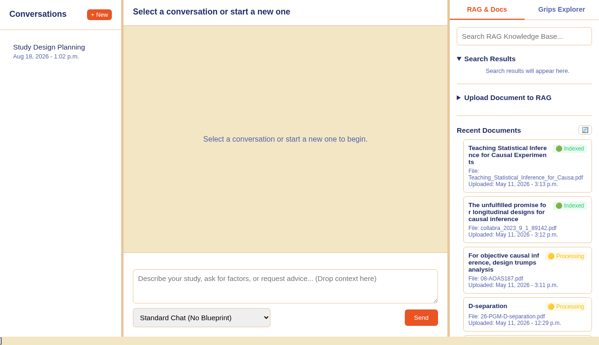
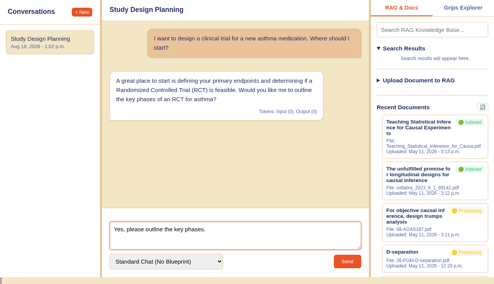
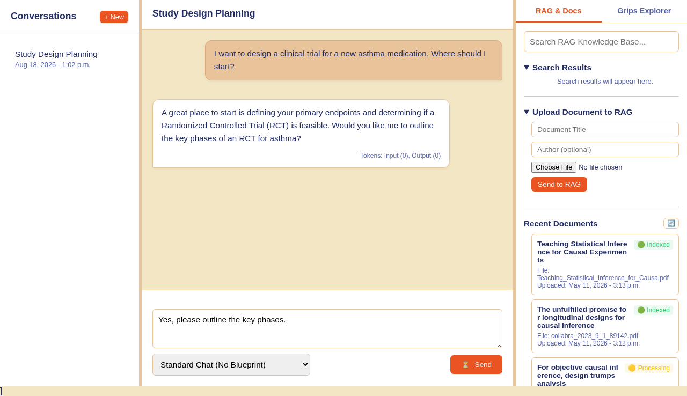
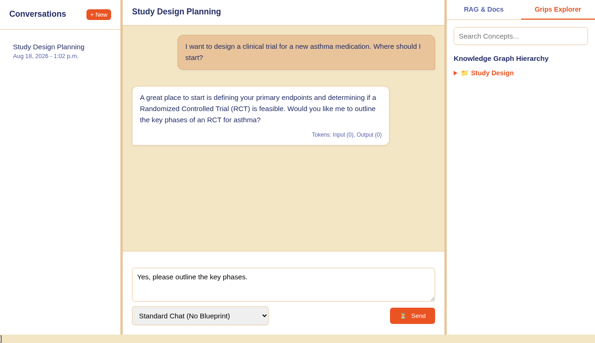

Demo UI
The Demo UI is a Django template with htmx-managed updates that provides a chat interface. Its not so different from openWebUI. Its provided as a demo and playtest pending development of a finished UI/UX with more features tailored to the domain.
App achievements
Shows “Conversations” list and displays chat for the selected
Allows direct RAG index search for user
Shows Blueprints for users to adopt.
App enhancement
Support more of the setup functions from this screen (file uploads)
Show more of the progress through blueprints as they happen, and tool products.
UI Walkthrough
1. Main Chat Interface
The main chat interface allows you to interact with the active AI model.
{kind=link}

2. Sending a Prompt
Fill out the prompt field and optionally attach documents.
{kind=link}

3. AI Response
The AI streams its response directly into the chat bubble.

4. Document Management
Manage and upload RAG context files via the Documents tab.
{kind=link}

5. Grips Explorer
Explore the conceptual knowledge graph populated by Grips.
{kind=link}

Demo UI Views
- demo_ui.views.download_file(request, conversation_id, filename)[source]
Secure endpoint to download a generated file from a conversation workspace.
- demo_ui.views.fill_grips_stub(request, concept_id)[source]
Triggers the Grips Stub Filler blueprint for a specific ConceptNode.
- demo_ui.views.get_conversation(request, conversation_id)[source]
HTMX endpoint to load an existing conversation’s history.
- demo_ui.views.grips_concept_children(request, concept_id)[source]
HTMX endpoint to lazily load children of a ConceptNode in the hierarchy.
- demo_ui.views.list_documents(request)[source]
HTMX endpoint to render the recent uploaded documents list.
- demo_ui.views.search_knowledge_base(request)[source]
HTMX endpoint to perform a unified search across RAG and Grips.